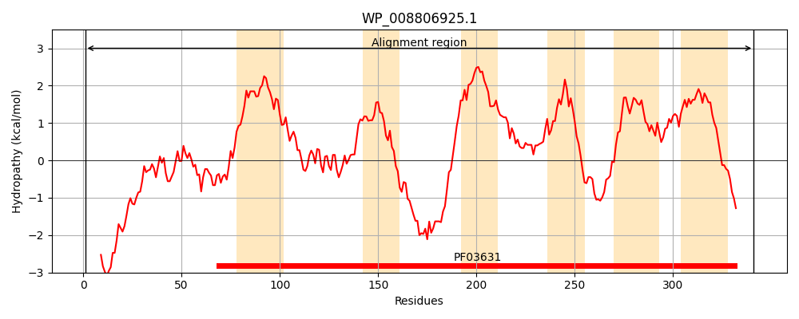
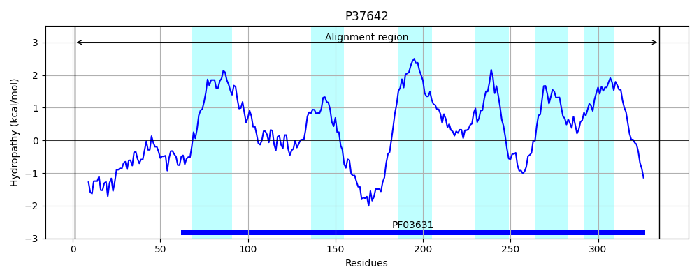
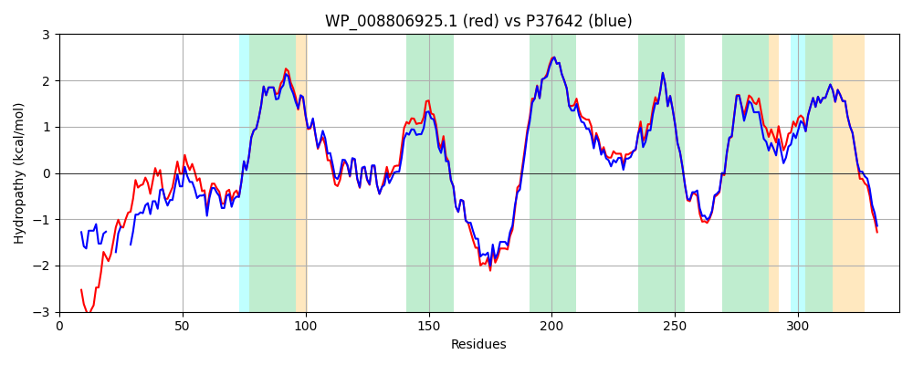

Hit Accession: P37642
Hit TCID: 9.B.126.1.1
Hit Description: gnl|BL_ORD_ID|10117 gnl|TC-DB|P37642|9.B.126.1.1 Inner membrane protein yhjD OS=Escherichia coli (strain K12) GN=yhjD PE=1 SV=1
Mach Len: 341
e:0.000000
Query TMS Count : 6
Hit TMS Count: 6
TMS-Overlap Score: 3.900000
Predicted Substrates:CHEBI:6486;lipid
BLAST Alignment:
Score: 1443 , Bit scores: 560 bits, E-value: 0.0e+00, Alignment length: 341, Percentage identity: 83
Query: 1 MTPENDDRRPPQEPDTQPEKNKSPLDALNDTAVGQKASQALKTVTGTAAKVQRNPVIAHLLRAAERFNDRLGNQFGAAITYFSFLSMIPILMVSFAAAGFVLAWHPTLLQDIFDKILQNVSDPTLAATLKNTINTAVQQRTAVGLVGLLVALYSGINWMGNLREAIRAQSRDVWERRPQDEEKIWIKYFRDLISLIGLLVALIITLSITSVAGSAQQLIISALYLDNIEWLKPAWRLIGLAISIFANYLLFFWIFWRLPRHRPRRKALFRGTLIAAIGFEIIKIVMTWTLPALVKSPSGAAFGSVLGLMAFFYFFARLTLFCAAWIATAEYKDDRRMPGKT 341
MT EN+ +RP Q+ + +P K PLD ++ G K SQAL+TVT TA KVQR PVIAHL+RA ERFNDRLGNQFGAAITYFSFLSMIPILMVSFAA GFVLA HP LLQDIFDKILQN+SDPTLAATLKNTINTAVQQRT VGLVGL VALYSGINWMGNLREAIRAQSRDVWER PQD+EK W+KY RD ISLIGLL+ALI+TLSITSVAGSAQQ+IISAL+L++IEWLKP WRLIGLAISIFANYLLFFWIFWRLPRHRPR+KAL RGT +AAIGFE+IKIVMT+TLP+L+KSPSGAAFGSVLGLMAFFYFFARLTLFCAAWIATAEYKDD RMPGKT
Sbjct: 1 MTQENEIKRPIQDLEHEPIK---PLD---NSEKGSKVSQALETVTTTAEKVQRQPVIAHLIRATERFNDRLGNQFGAAITYFSFLSMIPILMVSFAAGGFVLASHPMLLQDIFDKILQNISDPTLAATLKNTINTAVQQRTTVGLVGLAVALYSGINWMGNLREAIRAQSRDVWERSPQDQEKFWVKYLRDFISLIGLLIALIVTLSITSVAGSAQQMIISALHLNSIEWLKPTWRLIGLAISIFANYLLFFWIFWRLPRHRPRKKALIRGTFLAAIGFEVIKIVMTYTLPSLMKSPSGAAFGSVLGLMAFFYFFARLTLFCAAWIATAEYKDDPRMPGKT 335 | Protein Hydropathy Plots: |
|---|
|  |  |
Pairwise Alignment-Hydropathy Plot:
|
|---|
|  |